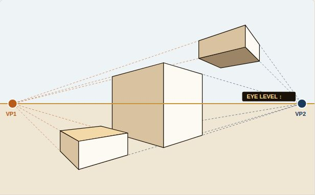

Perspective Lab
Perspective is not a trick of rulers. It is simply where you are standing. In this lab you will find the eye level and vanishing points inside one of my paintings, then move them yourself and watch the whole scene change.
"Before you draw a building, decide where your eyes are. Everything else follows from that."
Find the perspective in a real painting
Turn on the guides one at a time. Look at how the lines of the roof and the base of the building lean toward the same points.

Vaughn Tucker, Down Town Kingstown, 22 × 28 in, 2021. The guides are drawn over the painting to show its construction.
This is two-point perspective. We are looking at the corner of the building, so each wall runs away from us toward its own vanishing point.
The eye level is low, about the height of a person standing on the street. That is why we look up at the roof and see the underside of the balcony, but we see the top of the curb.
Both vanishing points are outside the canvas. When they are far apart, the building looks calm and natural. If they were close together, the corner would look sharp and stretched.
Now move it yourself
In the full lab you take control. Drag the eye level and the vanishing points, switch between 1-, 2- and 3-point perspective, and watch the scene change while my notes explain what you are seeing. Then put it on paper with guided drawing exercises.

- Interactive lab: 1-, 2- and 3-point perspective
- Drag the eye level, vanishing points and forms
- Live teaching notes from Vaughn as you work
- Three guided drawing exercises on paper
- Works on computer, iPad and phone
- Yours to keep, with no subscription
Secure checkout by Stripe. You go straight to the full lab after paying.